BIOGRAPHIE :
Muse est un groupe de rock britannique composé de Matthew Bellamy (chant, guitare, piano), de Christopher Wolstenholme (basse, harmonica, chant, choeurs), et de Dominic Howard (batteries, percussions). Il a été formé en 1992 mais n'apparaît sur scène qu'à partir de 1994. Ils ont sorti 9 albums et ont reçu de nombreux prix entre 2000 et 2022.
DISCOGRAPHIE :
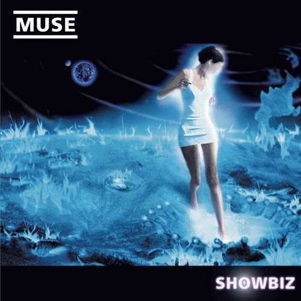
Showbiz (1999) 17/20
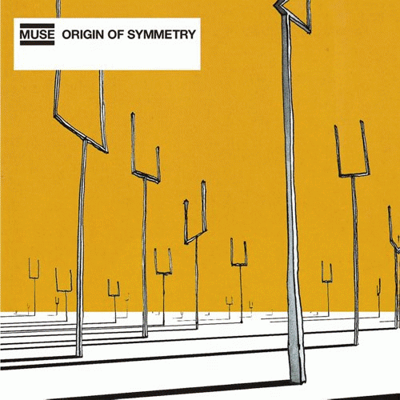
Origin of Symmetry (2001) 18/20
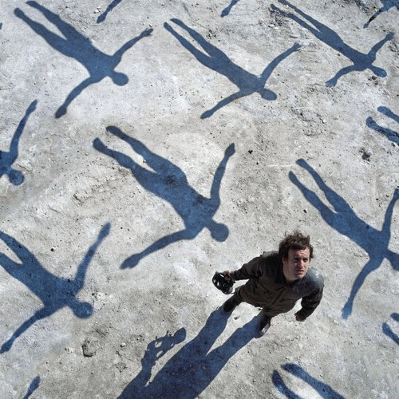
Absolution (2003) 17/20
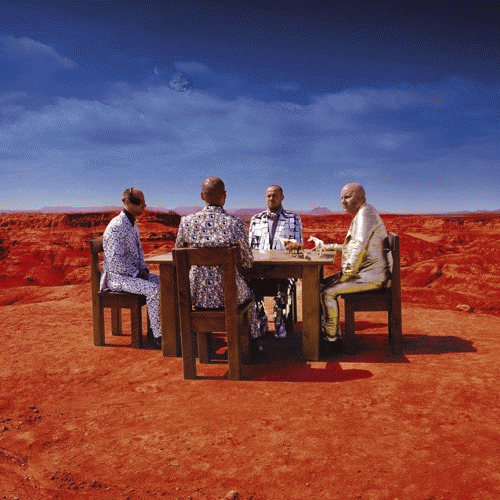
Black Holes and Revelations (2006) 16/20
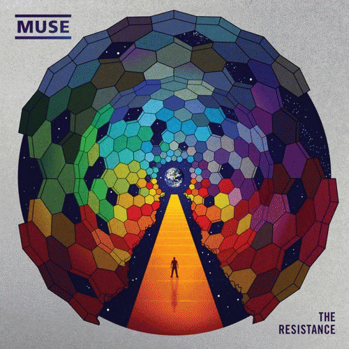
The Resistance (2009) 16/20
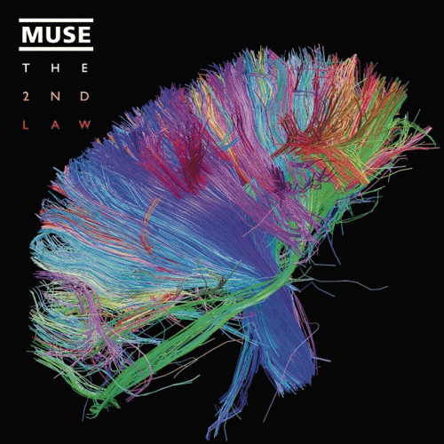
The 2nd Law (2012) 14/20
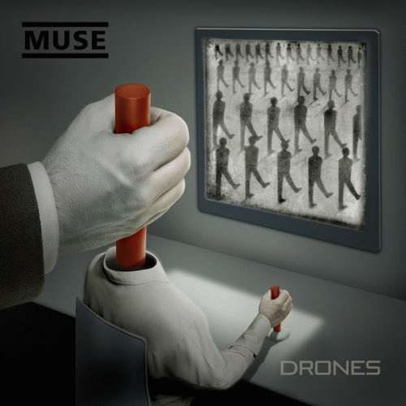
Drones (2015) 16/20
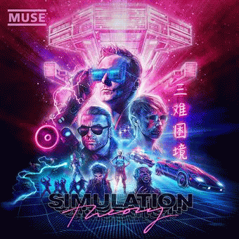
Simulation Theory (2018) 15/20
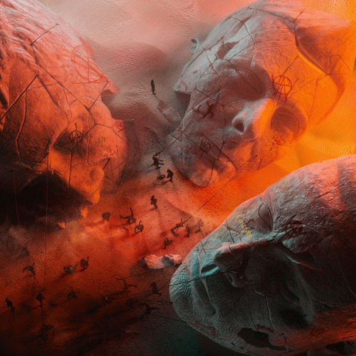
Will of the People (2022) 17/20
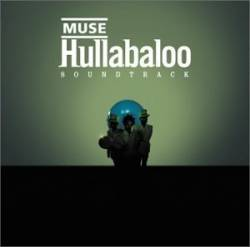
Hullabaloo (2002) 16/20
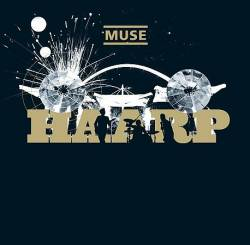
H.A.A.R.P. - Live from Wembley (2008) 18/20
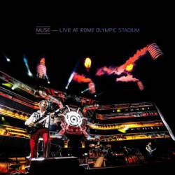
Live at Rome Olympic Stadium (2013) 16/20